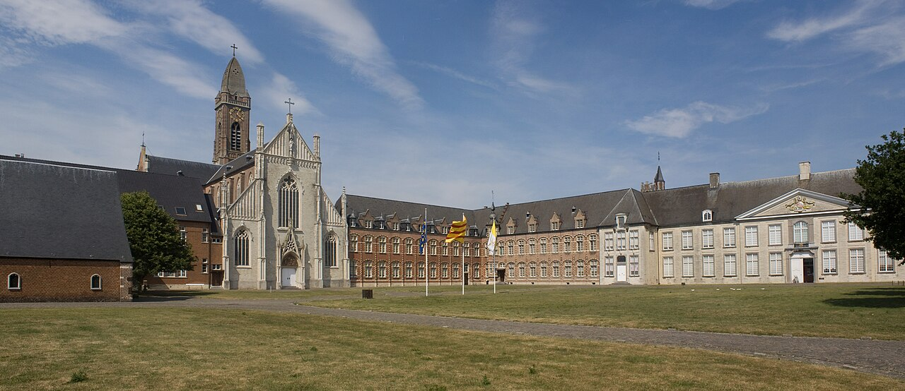
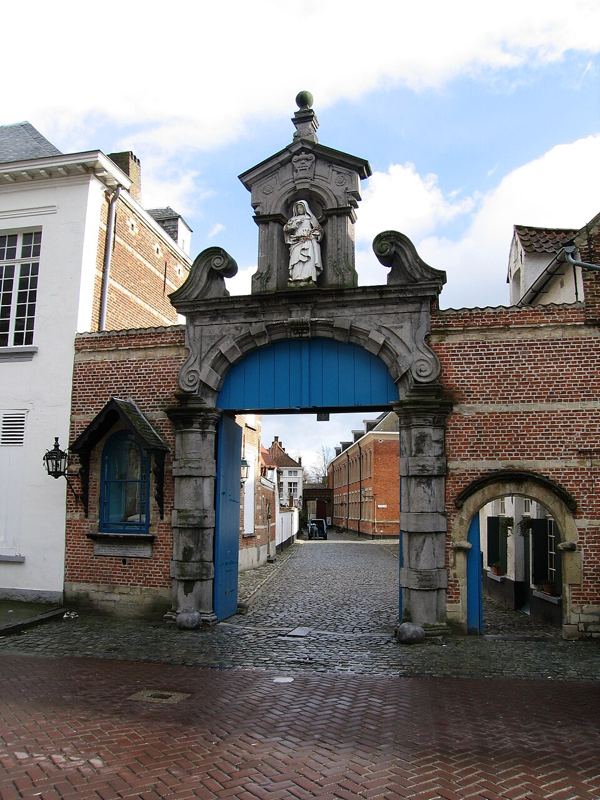
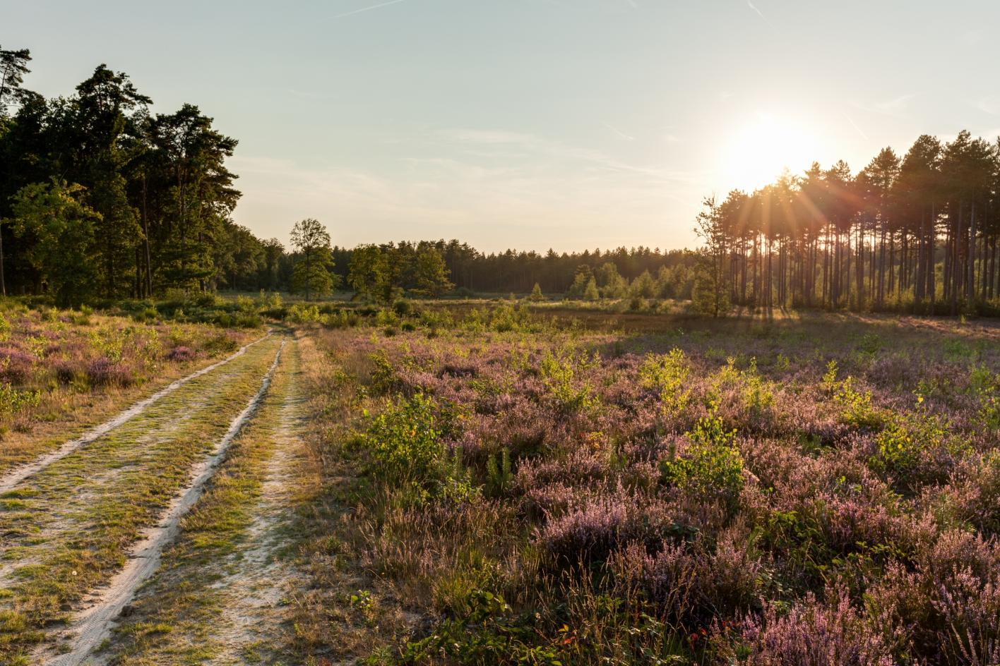
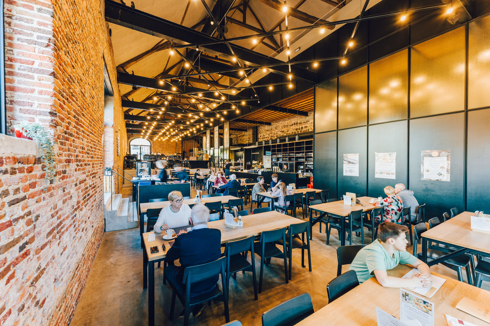
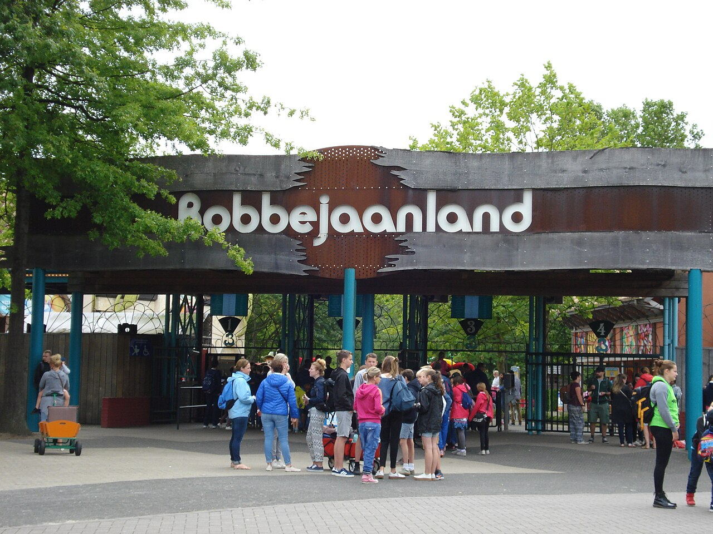
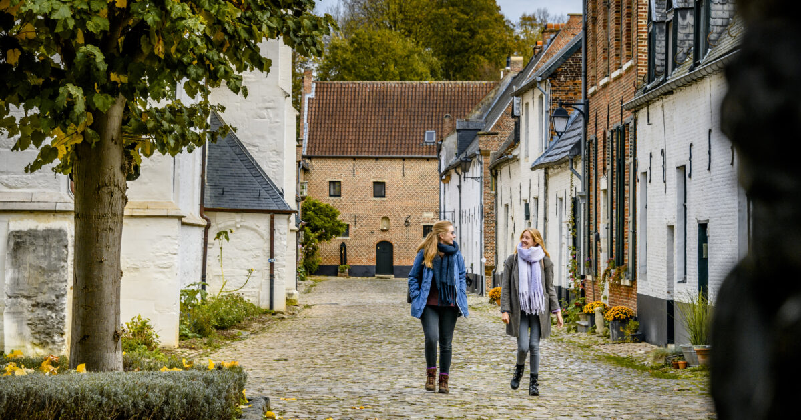
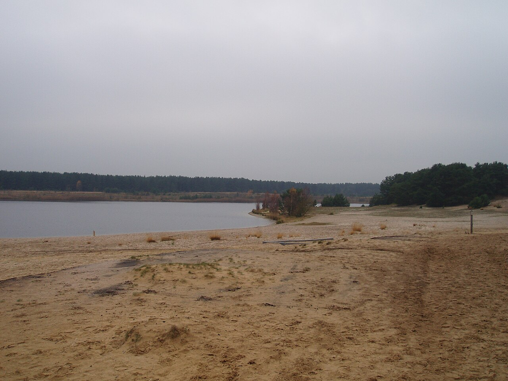
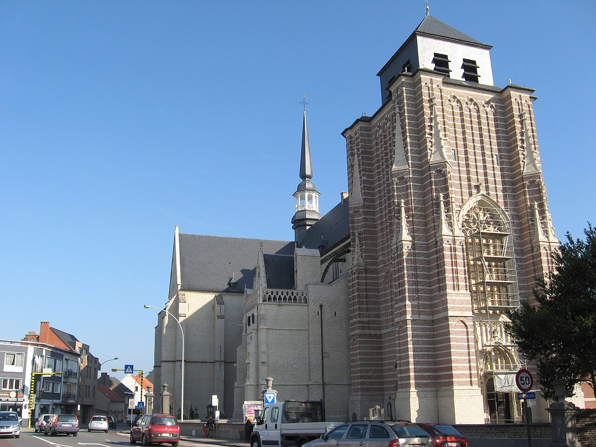
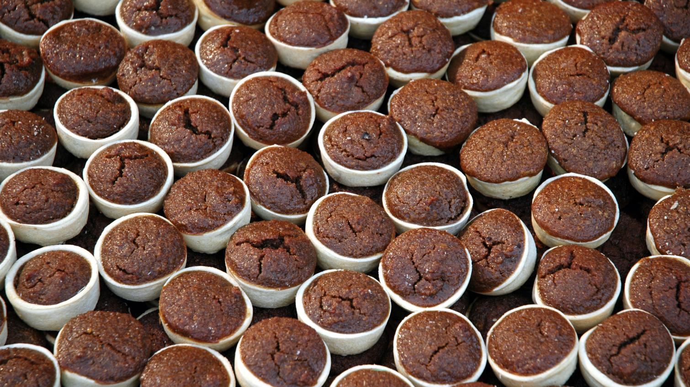
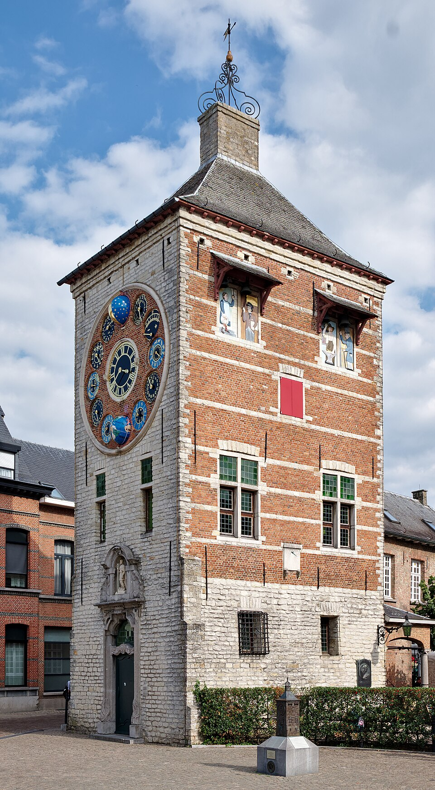

Greetings fromTONGERLO
1 min
The reason to walk over before breakfast: an 8 × 4 m canvas copy of Leonardo's Last Supper — back in the church since summer 2025.
A rack of day-trip postcards drawn from the canonical write-up — same picks, fewer paragraphs. Pull one, plan a day, be back by 17:00 to change for dinner.

Greetings fromThe reason to walk over before breakfast: an 8 × 4 m canvas copy of Leonardo's Last Supper — back in the church since summer 2025.
Maison Colette's own 5 rooms, then three B&Bs and one 4-star within a 14–26 min walk.
17th-c. watermill, a converted Carmelite convent, a forester's house in the woods.
Leuven & Mechelen meetups in-ring; Techorama, Devoxx, DDD Europe sit 35–47 km out.

Greetings fromEverything in a 15-min walking loop. UNESCO begijnhof, the Zimmertoren clock, a spiced Liers Vlaaike on the way out.

Greetings from593 ha of heath, dunes and Nardus grassland — restoration brought the nightjar back. Red loop 11.2 km / 170 min.

Greetings fromThe only place to taste the abbey's own draught — micro-brewed inside the café. Bottles are contract-brewed elsewhere.

Greetings fromFury — 43 m tall, 106.6 km/h, triple-launch, riders vote forwards or backwards. Typhoon's 97° drop.
Abbey gate stays shut except one open day a year — but the café opposite pours Extra, Dubbel, Tripel + abbey cheese until midnight.

Greetings fromGroot Begijnhof founded 1253 — among the largest in the world. The 1845 citadel is one of few in Europe still intact.

Greetings fromSand dunes inside Bosland. The red loop (11.7 km) is the one voted Belgium's most beautiful hike.
Moated, still lived in by Prince Simon. Most days you walk the perimeter; book July's Kasteelfeesten to actually go inside.
Westerlo's backyard — 127 ha of star-shaped 18th-c. avenues. Asberg dune (24 m) is the highest point in town.

Greetings fromSint-Dimpna church and the medieval-rooted family-foster-care tradition. ~500 psychiatric residents still placed with townspeople today.

Take home from300-year-old spiced pastry — candy syrup + four spices. EU-recognised regional product since 2013.
 Detail from
Detail from
Multispectral analysis pins the sfumato and St. John's face on Leonardo himself; Giampietrino, Solario and d'Oggiono identified as workshop collaborators.

Greetings fromLouis Zimmer's astronomical Centenary Clock. Part of the Lier walking loop.
Once one of the world's largest card producers — 1.3 million packs a day. Museum has the antique steam-powered printing wheels.
Bobbejaanland 10:00–17:00, full day. Wet-weather fallback: Plopsa Hasselt or Sunparks Aquafun.
Het Moment for the abbey-only draught → Café Trappisten Westmalle for Extra / Dubbel / Tripel + cheese.
Diest morning (UNESCO + Sulpitius + citadel) → Tongerlo abbey late afternoon → dinner.
Just outside the ring. Five waymarked 3–12 km abbey walks — treat as separate excursion.
[38]Saturday brewery tours (11:00 / 14:00, €18). Too far for a Maison Colette day — listed only to rule out.
[76]Where Tongerlo abbey beer is actually brewed since 1990. Mon–Thu tours only; outside the ring.
[80]~100-stall market on the Grote Markt every Wednesday morning. ⚠ Not weekends.
[82] ⓘIf your weekend wants a market, drive to Lier — Saturday 08:00–12:30 on the Grote Markt.
[81] ⓘTongerlo abbey shop next door — bottles, honey, jams. ⚠ No tasting on site; beer brewed in Boortmeerbeek.
[84] ⓘGault&Millau chocolatier — melocakes in 20 flavours, paardenkoppen. Take home a box.
[83] ⓘ600 m indoor/outdoor track with a banked turn. €13 / 12 min — one of the cheapest in Belgium.
[68] · OlenElectric karts on a projected interactive landscape. Min height 1.45 m.
[69] · Herentals5 outdoor courts in the village — best 90-min slot of the trip if you forgot trainers.
[70] · WesterloFree forest play, sand hills, climbing, maze. 1.5 km gnome trail for ages 3–7.
[67] · KasterleeProvincial domain with sand-beach swim pond, mini-golf, water bikes; sailing/surf by group reservation.
[61] · MolAll-weather toddler / early-elementary park. Dated €24, undated €32, family €25 pp.
[65] · Hasselt~700 km of waymarked walking paths across three provinces — "most popular walking area in Flanders."
[16] · network
Atlas of research
— Day-trips and activities within 30 km of Maison Colette
parent: A Maison Colette weekend in Tongerlo
80 citations · expedition depth · 8-min read
Also at Atlas
What this rack leaves out (and where to find it): this view trims the canonical down to the spinner. For the full comparisons — the six begijnhof towns ranked, all eight beer stops with walk-in policies, the Kempen fietsknooppunten note, and the Norbertine vs Premonstratensian beer distinction — the canonical write-up stays the source of truth. Saturday squeeze: most Maison Colette services seat from 19:00; on-site check-in for the 5 guestrooms closes at 18:00.